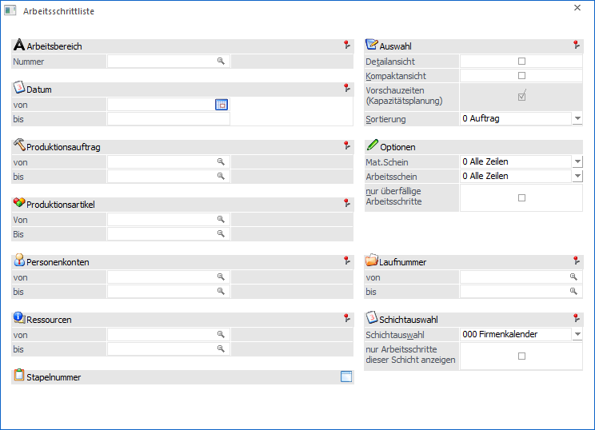
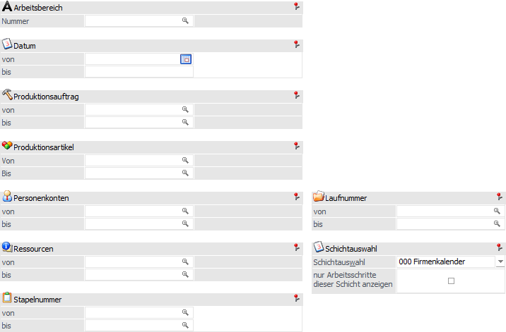
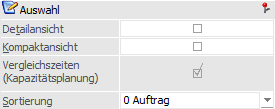
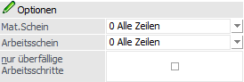
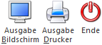

Über den Menüpunkt
1 WinLine PPS
1 Auswertungen
1 Arbeitsschrittliste
kann die Arbeitsschrittliste ausgegeben werden. In dieser ist ersichtlich, welche Arbeitsschritte bzw. welche Tätigkeiten ausgeführt werden sollen und welche Zeiten dafür vorgesehen sind.
Hinweis
Abgeschlossene Produktionsauftrag und / oder Arbeitsschritte werden auf der Auswertung nicht ausgegeben.

Die Ausgabe kann durch folgende Kriterien eingeschränkt bzw. beeinflusst werden:
Selektion

Ø Arbeitsbereich
An dieser Stelle kann die Auswahl des Arbeitsbereichs erfolgen. Mit Hilfe von Arbeitsbereichen können diverse Einschränkungen, wie z.B. der Produktionsartikel oder der Stapelnummer, bereits vorbelegt werden. Die Anlage des Arbeitsbereichs erfolgt in den Stammdaten (WinLine PPS - Stammdaten - Arbeitsbereiche).
Ø Datum von / bis
Hier kann eine Einschränkung auf den Datumsbereich der Tätigkeiten (Produktionsbeginn / Produktionsende) erfolgen.
Ø Produktionsauftrag von / bis
An dieser Stelle kann eine Einschränkung auf die Produktionsaufträge erfolgen, welche in der weiteren Folge ausgewertet werden sollen.
Ø Produktionsartikel von / bis
Mit Hilfe dieser Eingabefelder kann eine Selektion auf die Produktionsartikel erfolgen, welche in der Auswertung berücksichtigt werden sollen.
Hinweis
Wird im Feld "Produktionsartikel von / bis" nur eine Artikelnummer eingegeben und dieser Artikel hat auch noch Ausprägungen, so werden alle Ausprägungen automatisch mit angedruckt. Nur wenn während des Anklickens des entsprechenden "Ausgabe"-Buttons die STRG-Taste gedrückt wird, wird nur der Hauptartikel alleine ausgewertet.
Ø Personenkonten von / bis
An dieser Stelle kann eine Einschränkung auf die Personenkonten erfolgen, für welche die Produktionsaufträge durchgeführt werden sollen. Dieses ist allerdings nur dann sinnvoll, wenn die Produktionsaufträge aus der WinLine FAKT übergeben wurden, bzw. wenn beim Produktionsauftrag manuell ein Personenkonto hinterlegt wurde.
Ø Ressourcen von / bis
Erfolgt an dieser Stelle eine Einschränkung auf Ressourcen, so werden nur jene Produktionsaufträge bzw. Arbeitsschritte für die Ausgabe berücksichtigt, bei denen die angegebenen Ressourcen reserviert wurden.
Hinweis
Wird eine Ressourcengruppe selektiert, so darf noch keine Feinplanung durchgeführt worden sein (ansonsten stehen bereits die geplanten Ressourcen für den Produktionsauftrag fest).
Ø Stapelnummer von / bis
An dieser Stelle kann eine Einschränkung mit Hilfe der Stapelnummern erfolgen.
Ø Laufnummer von / bis
Hier kann die Ausgabe über eine Selektion auf die Laufnummer (Beleg aus der WinLine FAKT) erfolgen. Dieses ist allerdings nur dann sinnvoll, wenn die Produktionsaufträge aus der WinLine FAKT übergeben wurden, bzw. wenn beim Produktionsauftrag manuell eine Laufnummer hinterlegt wurde.
Ø Schichtauswahl
An dieser Stelle kann die Auswahl der Schicht, für welche die Auswertung durchgeführt werden soll, erfolgen. Bei der Auswahl "000 - Firmenkalender" erfolgt keine Eingrenzung, d.h. es wird alles in der Auswertung angezeigt. Wird eine Schicht gewählt, so werden in der Auswertung nur noch jene Tätigkeiten aufgelistet, welche zu der gewählten Schicht passen.
Hinweis
Die Auswahl der Schicht hat zunächst keinen Einfluss auf die Anzeige der Produktionsaufträge bzw. Arbeitsschritte. Hierfür muss die nachfolgende Option "nur Arbeitsschritte dieser Schicht anzeigen" aktiviert werden.
Ø nur Arbeitsschritte dieser Schicht anzeigen
Durch Aktivierung dieser Option werden in der Auswertung nur noch jene Produktionsaufträge bzw. Arbeitsschritte angezeigt, in denen die gewählte Schicht (siehe Feld "Schichtauswahl") vorkommt.
Auswahl

Ø Detailansicht
Durch Aktivierung dieser Option werden zu den Tätigkeiten auch die einzelnen Ressourcen ausgegeben.
Ø Kompaktansicht
Mit Hilfe dieser Option werden auf der Liste nur die Produktionsaufträge mit den Infos "Produktionsbeginn" und "Produktionsende" angezeigt, d.h. es erfolge keine Ausgabe von Arbeitsschritten, Tätigkeiten oder Ressourcen.
Ø Vorschauzeiten (Kapazitätsplanung)
Wird diese Option aktiviert, dann werden die Vergleichszeiten zwischen Grob- (Kapazitäten-)planung und Feinplanung angezeigt. Dadurch kann festgestellt werden, ob es gravierende Abweichungen zwischen den beiden Planungsvarianten gegeben hat.
Hinweis
Diese Option kann nur genutzt werden, wenn die Kapazitätsplanung in den PPS-Parametern aktiviert wurde (WinLine START - Parameter - Applikations-Parameter - PPS-Parameter - Parameter - Option "Kapazitätsplanung").
Ø Sortierung
An dieser Stelle kann definiert werden, nach welchen Kriterien die Arbeitsschrittliste sortiert werden soll. Folgende Varianten stehen zur Verfügung:
ü 0 - Auftrag
ü 1 - Stapelnummer
Optionen

Ø Mat.Schein
Mit den folgenden Optionen können Produktionsaufträge / Arbeitsschritte aufgrund des Druckstatus des Materialentnahmescheins selektiert werden:
ü 0 - Alle
Zeilen
Produktionsaufträge / Arbeitsschritte werden unabhängig vom
Druckstatus des Materialentnahmescheins ausgegeben.
ü 1 - muss gedruckt sein
Nur jene
Produktionsaufträge / Arbeitsschritte werden ausgegeben, für welche ein
Materialentnahmeschein gedruckt wurde.
ü 2 - darf nicht gedruckt
sein
Nur jene Produktionsaufträge / Arbeitsschritte werden ausgegeben, für
welche noch kein Materialentnahmeschein gedruckt wurde.
Ø Arbeitsschein
Mit den folgenden Optionen können Produktionsaufträge / Arbeitsschritte aufgrund des Druckstatus des Arbeitsscheins selektiert werden:
ü 0 - Alle
Zeilen
Produktionsaufträge / Arbeitsschritte werden unabhängig vom
Druckstatus des Arbeitsscheins ausgegeben.
ü 1 - muss gedruckt sein
Nur jene
Produktionsaufträge / Arbeitsschritte werden ausgegeben, für welche ein
Arbeitsschein gedruckt wurde.
ü 2 - darf nicht gedruckt
sein
Nur jene Produktionsaufträge / Arbeitsschritte werden ausgegeben, für
welche noch kein Arbeitsschein gedruckt wurde.
Ø nur überfällige Arbeitsschritte
Wenn diese Option aktiviert wird, dann werden nur die überfälligen Arbeitsschritte (d.h. jene, welche bereits erledigt hätten sein sollen) angezeigt.
Buttons

Ø Ausgabe Bildschirm
Mit Hilfe des Buttons "Ausgabe Bildschirm" oder der Taste F5 wird die Auswertung am Bildschirm ausgegeben.
Ø Ausgabe Drucker
Durch Anwahl des Buttons "Ausgabe Drucker" wird die Auswertung am Drucker ausgegeben.
Hinweis - Tätigkeit noch offen / Tätigkeit erledigt
Auf der Auswertung wird bei jeder Tätigkeit durch ein Symbol darauf hingewiesen, ob es sich um eine offene oder abgeschlossene Tätigkeit handelt.
ü - Tätigkeit noch offen
Die Tätigkeit
wurde noch nicht erledigt.
ü - Tätigkeit erledigt
Die Tätigkeit wurde
bereits erledigt, d.h. es wurde über das Programm "IST-Zeitenerfassung"
(Register "Produktionsauftrag") die Tätigkeit gemeldet und abgeschlossen (Option
"abgeschlossen").